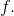
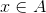
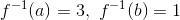
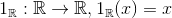

Compunerea funcțiilor si funcții inversabile
Definiția FE12: Compunerea a două funcții
Fie funcțiile  și
și
Funcția se numește compusa funcțiilor  și
și  , dacă oricare ar fi
, dacă oricare ar fi
Se notează astfel și se citește „ compus cu ”.
Avem că oricare ar fi
Schematic, avem:

Exemplu:
Avem următoarele funcții:
și
.
Identificăm mulțimile: .
Scriem compusa celor două funcții (folosind definiția de mai sus):
Avem următoarele cazuri:
- Calculăm .

Schematic, avem că:

- Calculăm .
Schematic, avem că:

Astfel, având toate calculele făcute, putem reprezenta schematic întreg exercițiul astfel:

Propoziția FE13: Proprietăți ale compunerii funcțiilor
- Asociativitatea:
Fie funcțiile
Atunci, avem că:
oricare ar fi
Avem următoarea schemă a asociativității:

Demonstrăm asociativitatea compunerii funcțiilor:
Rezultă că oricare ar fi
- Elementul neutru față de operația de compunere a funcțiilor definite pe o mulțime cu valori în ea însăși este funcția identică a acelei mulțimi.
- Funcția identică a mulțimii
 este oricare ar fi
este oricare ar fi - Pentru orice funcție de forma avem sau oricare ar fi
- Funcția identică a mulțimii
- Compunerea funcțiilor nu este comutativă:

Funcții inversabile
Reamintim noțiunea de compunere a funcțiilor:
Avem funcțiile și .
Compunerea celor două funcții se scrie astfel:
Exemplu:
Fie funcțiile și
Să se calculeze
Rezolvare:
Vom spune că funcțiile și sunt inverse una alteia, și notăm
Definiția FE14: Funcție inversabilă
Fie funcția .
Spunem că funcția este inversabilă, dacă există astfel încât:
- ;
- .
În acest caz, funcția se numește inversa funcției 
Notații:
- oricare ar fi ( aceasta este funcția identică a lui
 ).
). - oricare ar fi  ( aceasta este funcția identică a lui ).
Exemplu:
Fie funcția , care este reprezentată astfel:

Din diagrama de mai sus avem că și
Atunci, funcția inversă este și este reprezentată astfel:

Avem că  și
Propoziția FE15: Condiția de inversabilitate
Spunem că o funcție este inversabilă dacă și numai dacă este o funcție bijectivă.
Observație:
În cazul funcțiilor definite pe mulțimi finite, este bijectivă dacă și numai dacă
Exemplu:
Fie funcția bijectivă Să se determine inversa funcției
Rezolvare:
Avem:
.
Pentru a determina inversa funcției  (adică expresia acesteia), înlocuim
(adică expresia acesteia), înlocuim  cu
cu  și obținem .
și obținem .
Înlocuim acum cu și obținem funcția inversă
Interpretarea geometrică (grafică) a inversei unei funcții
Reamintim, din secțiunea Graficul funcției de gradul I, din cadrul eBook-ului Ghid | Funcția de gradul I, că graficul funcției identice a lui  este prima bisectoare.
este prima bisectoare.
Avem , cu ecuația  , adică prima bisectoare, așa cum se poate vedea pe graficul din secțiunea indicată.
, adică prima bisectoare, așa cum se poate vedea pe graficul din secțiunea indicată.
Propoziția FE16: Graficul funcție inverse
Graficul funcției directe și graficul funcției inverse sunt simetrice față de prima bisectoare.
Exemplu:
Să reprezentăm grafic funcțiile și
Rezolvare:
Am văzut mai sus că
Atunci, în graficul de mai jos, reprezentatăm cu linie punctată prima bisectoare, cu roșu graficul funcției și cu albastru funcția inversă